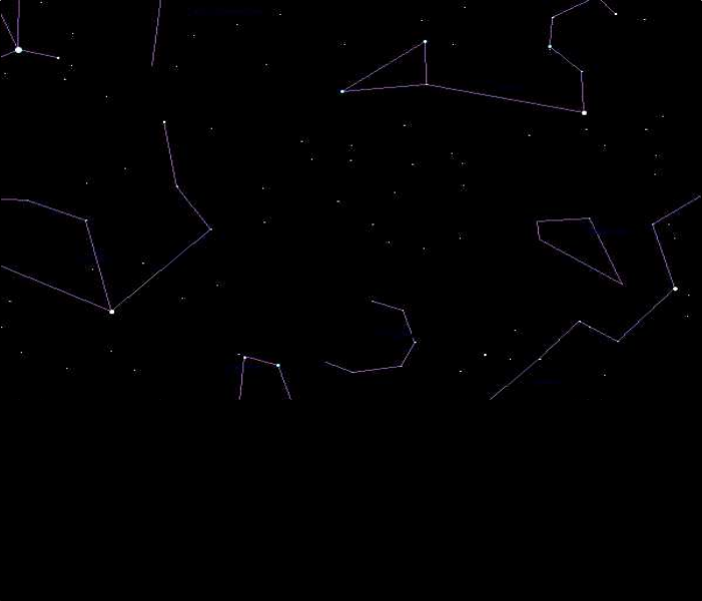
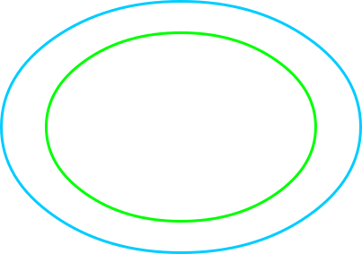

Diagram the apparent westward motion of a superrior planet


- Earth, on the inner green orbit
- superior planet, on the outer blue orbit
- sight line from Earth, extended to the background stars
Controls
Press START to run the animation, STOP to pause it, and RESTART to return the timeline to its beginning. The timeline slider steps through the same sequence by hand: use the arrow keys, Page Up and Page Down, or Home and End.